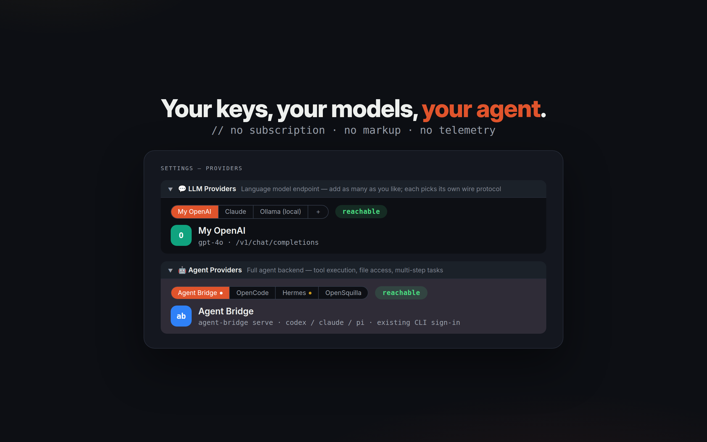

Guide / Connecting backends
Connecting backends
No accounts, no subscription, no markup — browsa simply brings your own model endpoints into the side panel. Cloud, local, or self-hosted: all welcome.
Two kinds of backends
- LLM providers — plain chat endpoints, covering nearly every service: OpenAI, Anthropic, Ollama, Groq, LiteLLM, aggregation gateways.
- Hermes Agent — a self-hosted agent with server-side tool execution: it can search, run commands, and operate files. Built into browsa; just point it at your server.
Filling in a provider card
Open ⚙ Settings → LLM Providers. An empty LLM 1 card is reserved for you — fill it in and Save, or use ＋ Add Provider anytime:
| Field | What to put |
|---|---|
| Alias | A name you choose ("My OpenAI", "本地模型") — shown in the sidebar dropdown so multiple cards stay distinguishable |
| Base URL | Root path only, e.g. https://api.openai.com — protocol paths are appended automatically |
| API Key | Your key, stored locally only (see privacy) |
| Model ID | Required, e.g. gpt-4o; comma-separate several — one card covers an entire gateway's catalog |
| API protocol | What this endpoint speaks: Chat Completions / Responses / Anthropic |
Save, then hit Ping: connectivity is verified and capabilities auto-detected. The first provider to ping successfully becomes active automatically; switch anytime from the dropdown at the top of the panel — multi-model cards expand to one "Alias · model" entry each.

Hermes Agent
Hermes is a self-hosted AI agent with built-in tools (web search, terminal, files, memory). browsa speaks its /v1/runs protocol — which adds live tool progress and approval cards for dangerous actions (approve first, execute after):
- Install:
pip install hermes-agent(or follow the official guide); - Add to
~/.hermes/.env:API_SERVER_ENABLED=trueandAPI_SERVER_KEY=your-secret-key; - Start:
hermes gateway— look forAPI server listening on http://127.0.0.1:8642; - In browsa settings, select the Hermes Agent card, fill Base URL (e.g.
http://127.0.0.1:8642) and API Key, then Ping.
The Hermes card is fixed and always present; it needs only a Base URL and key — the protocol is auto-detected, falling back to plain chat if the server doesn't advertise /v1/runs.
Ollama, locally
Running Ollama on your machine? Base URL http://localhost:11434, protocol Chat Completions (Ollama speaks the OpenAI format), Model ID set to a pulled model such as qwen3:32b. Fully offline-capable.
/v1/chat/completions tail); the key is valid; a local model is actually running; your network doesn't block the domain. Errors in the panel come as classified error cards with the raw message expandable and copyable.